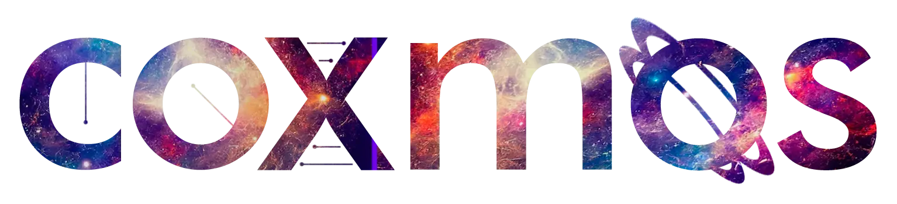
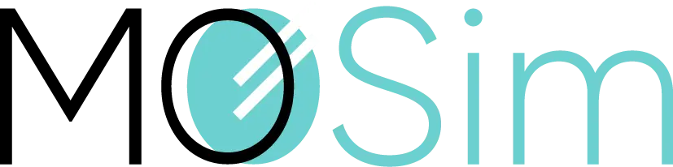
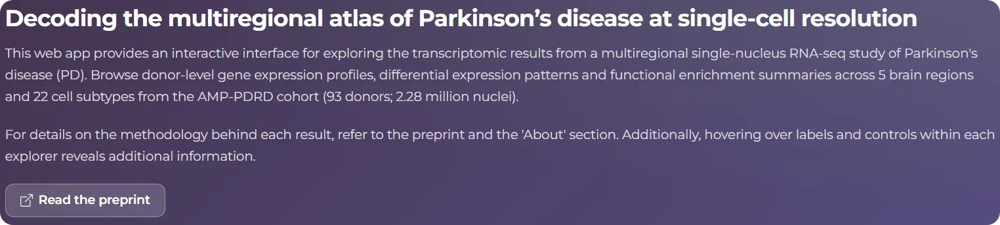

Tools


MOSim
Mar 2025R package to simulate multi-omic bulk and single-cell experiments that mimic regulatory mechanisms within the cell.
No matching items
Web apps

PD Atlas Explorer
Apr 2026Interactive explorer for the multiregional single-cell atlas of Parkinson's disease presented in Tejedor-Serrano et al., 2026.
No matching items